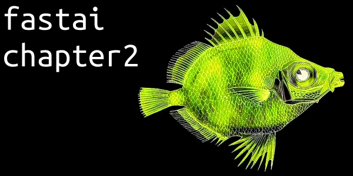
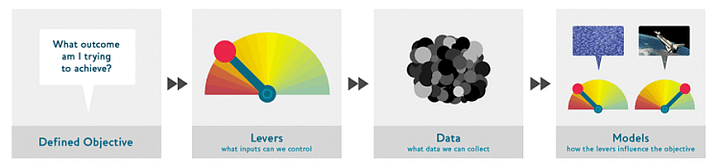
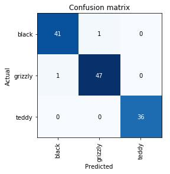
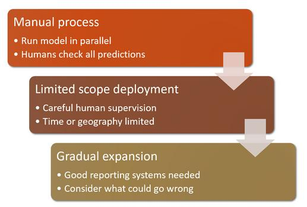

Intro
This my summary of chapter 2 from the book “Deep Learning for Coders with fastai & PyTorch”.
- questions - question about the chapter
- key concepts - summarized key concepts of the chapter
- Homepage: fastai hompage
- Online Book: fastai online book
- Author: jermey howard
- Author: sylvain gugger
Questions
Questions about the chapter.
Code
Code from this chapter.
Code - Chapter 2 - From a model to production - Bears
Code - Course 1-2 - Deployment - Dog or Cat
Code - Course 1-2 - Deployment - Gradio Dog or Cat App Code
Code - Course 1-2 - Deployment - Gradio Dog or Cat App
Key Concepts
Summarized key concepts ot this chapter.
Drivetrain Approach
Data products get more and more complex so we sometimes lose sight of the real problem we are trying to solve. The Drivetrain Approach aims to better couple the data science to the real business needs/real world problem and to use data not just to generate more data but to use data to produce actionable outcomes.

- (Defined Objective) First we must define the objective / goal
- (Levers) Specify what inputs/levers of the system we control that influence the final outcome
- (Data) Determine what data to collect
- (Models) Building the predictive models
DataLoader, DataLoaders, DataBlock
- DataBlock is the data pipeline. A template that we create that has no data, but defines all the context on how to work with it. For example, how to split the data, the data types of or features and targets/labels, how to extract the labels from the underlying data (folders).
- DataLoader doesn’t care about preparing data, it expects the data is ready to go and only cares about how to load the data (e.g. whether in parallel or in a single process) as well as feeding the data to the model in batches (i.e. batch size)
- DataLoaders is a thin wrapper for more than one DataLoader.
A DataLoaders, is a thin class that automatically generates multiple DataLoader objects based on the rules specified in our DataBlock
Example of a DataLoaders with a DataBlock Api:
bears = DataBlock(
blocks =(ImageBlock, CategoryBlock),
get_items=get_image_files,
splitter=RandomSplitter(valid_pct=0.2, seed=42),
get_y=parent_label,
item_tfms=Resize(128)
)These are the main parameters of the DataBlock:
- blocks: is where you define the types of input and output data your model will work with. The first one is the independent (input) and the second one is dependent target. Usually you will have two input and output but you can have multiple input/output variables.
- get_items: tells fastai how and where to get the files/data when needed.
- splitter: how to split the data in training and validation set. Seeds are optional for replicability.
- get_y: how to extract the target/label/variable (dependent) from the data.
Data Augmentation
Data augmentation refers to creating random variations of our input data, such that they appear different but do not change the meaning of the data. Examples of common data augmentation techniques for images are rotation, flipping, perspective warping, brightness changes and contrast changes. Data augmentation is useful for the model to better understand the basic concept of what an object is and how the objects of interest are represented in images. Therefore, data augmentation allows machine learning models to generalize better. This is especially important when it can be slow and expensive to label data.
Clean the Data with you Model
On method to look at your model is visualizing it in a confusion matrix:

For this example the rows represent all the black, grizzly and teddy bears in our dataset, respectively. The columns represent the images that the model predicted as black, grizzly and teddy bears, respectively. Therefore, the diagonal of the matrix shows the images that were classified correctly, and the off-diagonal cells represent those that were classified incorrectly.
A confusion matrix is helpful to see where exactly our errors occurring 1. You can see if there are datasets errors (images with no bears or entries labeled incorrectly) 2. Or you can see if there is problem with the model (images with unusual lighting or blurred images)
The intuitive approach to doing data cleaning is to do it before you train a model. But you can also train a quick and simple model first, and then use it to help us with data cleaning. fastai includes a handy GUI for data cleaning called ImageClassifierCleaner that allows you to choose a category and the training versus validation set and view the highest-loss images (in order), along with menus to allow images to be selected for removal or relabeling:
cleaner = ImageClassifierCleaner(learn)
cleanerAvoid Disasters
You should always have in mind that it’s difficult to understand the behavior of a deep learning model. In a neural network the behavior emerges from the models attempt to match the training data, rather than being exactly defined.
One general problem is the out-of-domain data problem. That is to say, there may be data that our model sees in production that is very different from what it saw during training. There isn’t a complete technical solution to this problem, instead, we have to be careful about rolling out a deep learning model.
Another problem ist a domain is a domain shift, whereby the type of data that our model sees changes over time. For instance, an insurance company may use a deep learning model ass part of its pricing and risk algorithm, but over time the types of customers the company attracts and the types of risks it represents may change so much that the original training data is no longer relevant.
High-Level approach to mitigate the risks on a roll-out
